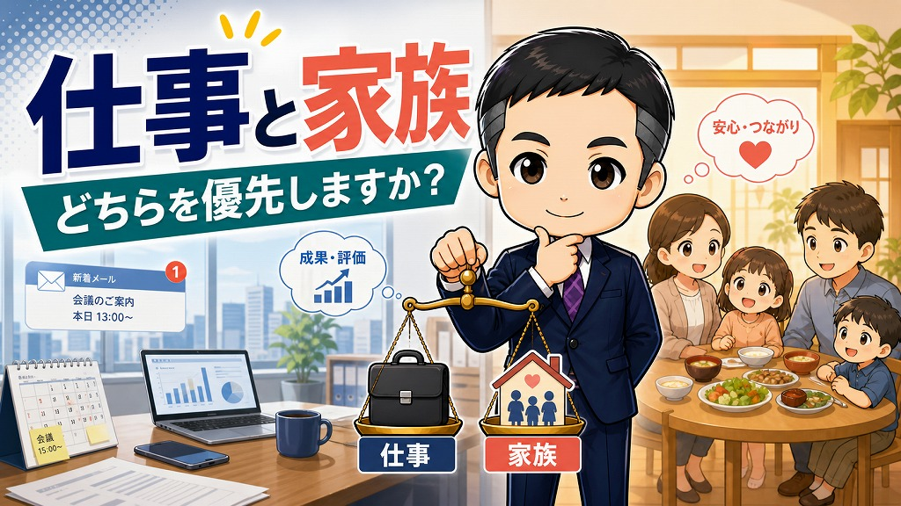

仕事と家族、どちらを優先しますか？

仕事と家族の予定が重なったとき、あなたはどちらを優先しますか。
日本では、多くの人が「仕事」と答えるかもしれません。
家族の用事があっても、友人との約束があっても、仕事が入れば仕事を優先する。
それが社会人として当然だと考えている人も多いと思います。
でも、昨日話したインド出身の方は、その感覚に強い違和感を持っていました。
その方は、20年ほど日本に住んでいる方です。
日本語も流暢で、日本の働き方にも慣れています。
それでも、「日本人はなぜそこまで仕事を優先するのか」と話していました。
この言葉を聞いて、私自身も考えました。
仕事を第一優先にする理由は、今も本当にあるのでしょうか。
インドでは、家族や友人の予定が先に来る
その方によると、インドでは仕事よりも、家族や友人を優先することが多いそうです。
家族の用事がある。
友人との予定がある。
そういう予定が入っていれば、まずそちらを済ませる。
仕事はそのあとにする。
もちろん、国や地域、職種によって違いはあります。
ただ、少なくともその方にとっては、「仕事のために家族や友人の予定を後回しにする」という日本的な感覚は、あまり理解しにくいものだったようです。
実際、昨日も似たような場面がありました。
本来は別の方がそのインドの方を迎えに行く予定でした。
ところが、仕事が入ったため行けなくなり、私が代わりに迎えに行くことになりました。
そのことについても、その方はこう話していました。
インドでは、友人との予定が入っていたら、友人の予定を優先しますよ（その方を責めるようなものではないです）。
仕事ばかり優先する日本人は、なぜそこまで仕事を優先するのですか。
この言葉は、かなり印象に残りました。
仕事を優先してきた対価は何だったのか
その方は、もうひとつ興味深いことを話していました。
仕事を第一優先にしなくても、インドではみんな普通に生活していますよ。
お金に困って、食べていけないというわけではありませんよ。
この言葉を聞いて、日本が仕事を第一優先にしてきた対価は何だったのかと考えました。
仕事を最優先にしてきた結果、日本人全員が経済的に豊かになったのか。
誰もが満足できる暮らしを手に入れたのか。
もちろん、仕事を頑張って豊かになった人もいます。
でも、多くの人にとっては、そう単純な話ではないはずです。
仕事を優先してきた。
でも、生活はそこまで楽になっていない。
家族との時間も少ない。
友人との関係も薄くなる。
趣味に打ち込む時間もない。
だとすると、仕事を第一優先にする意味を、今一度考える必要があります。
昔は、仕事を第一優先にする理由があった
もちろん、昔は仕事を第一優先にする理由がありました。
年功序列がありました。
終身雇用がありました。
同じ会社で頑張っていれば、少しずつ給料が上がっていく。
会社も定年まで面倒を見てくれる。
そういう時代であれば、仕事を第一優先にすることにも一定の合理性がありました。
仕事を頑張れば報われる。
会社に尽くせば、将来が安定する。
そういうロールモデルもありました。
仕事を第一優先にして頑張っている先輩が、出世して、給料も上がって、家庭を持って、家を買う。
そういう姿を見て、「自分もああなりたい」と思えた時代があったのだと思います。
でも、今は状況が変わっています。
年功序列は弱くなっています。
終身雇用も当たり前ではなくなっています。
転職も珍しくありません。
会社に尽くせば、必ず将来が保証されるわけでもありません。
そうなると、仕事を第一優先にする理由は、かなり薄れてきています。
何のために仕事をするのか
では、私たちは何のために仕事をするのでしょうか。
ここが、今の日本でかなり曖昧になっている気がします。
本来、仕事は人生を支えるためのものです。
家族と暮らすため。
友人と楽しい時間を過ごすため。
趣味に打ち込むため。
自分が大切にしたい生活を守るため。
そういう目的のために、仕事があるはずです。
ところが日本では、仕事そのものが目的になりやすい。
家族のために仕事をしているはずなのに、家族の予定より仕事を優先する。
自分の生活をよくするために仕事をしているはずなのに、生活のほとんどが仕事で埋まってしまう。
これは、どこかで順番が逆になっています。
インドの方が話していた感覚は、とてもシンプルです。
家族のために仕事をしている。
それなら、家族の用事が入ったら、家族を優先するのが自然ではないか。
この考え方は、日本人にとって耳が痛い部分もあると思います。
仕事以外に、何を第一優先にするのか
ただ、ここで難しいのは、仕事を減らせば自動的に幸せになるわけではないということです。
最近は、残業も以前より減ってきています。
企業もホワイト化しています。
昔のように、夜遅くまで働き続けることが美徳とされる空気は、少しずつ弱くなっています。
では、仕事をしなくなった時間を、何に使うのか。
ここで迷っている人が多いのではないかと思います。
家族のために使う。
友人のために使う。
趣味のために使う。
地域のために使う。
学びのために使う。
本来はいろいろな選択肢があります。
でも、それらに本気で向き合えている人は、まだ少ないのかもしれません。
仕事を第一優先にする理由は弱くなっている。
でも、仕事以外に第一優先にしたいものも見つかっていない。
その結果、何を頑張ればいいのかわからない。
そういう迷子状態にある人が、今の日本には多いのではないかと感じます。
これから選ばれるのは、生活を大切にできる職場です
これは、個人だけの問題ではありません。
会社側も考える必要があります。
社員が家族の用事を大切にできるか。
友人との予定や、地域での活動を犠牲にしすぎていないか。
休みを取ることに、罪悪感を持たせていないか。
これからの職場づくりでは、こうした点がますます重要になります。
給料だけで人を引き止めるのは難しくなっています。
働く人は、収入だけでなく、生活の質も見ています。
だからこそ、会社は「仕事を最優先できる人」だけを評価するのではなく、「生活を大切にしながら働ける仕組み」を整える必要があります。
それが結果的に、採用にも、定着にも、職場の信頼にもつながっていくはずです。
第一優先を見直す時期に来ている
仕事を第一優先にする時代は、少しずつ終わりに近づいているのかもしれません。
少なくとも、仕事だけを人生の中心に置くことは、以前ほど合理的ではなくなっています。
では、これから何を第一優先にするのか。
家族なのか。
友人なのか。
趣味なのか。
健康なのか。
学びなのか。
地域なのか。
自分の中で、仕事以外の優先順位を考え直す必要があります。
仕事を軽視するという話ではありません。
仕事は大切です。
生活を支えるものですし、社会との接点にもなります。
ただ、仕事は人生のすべてではありません。
何のために働くのか。
誰のために働くのか。
働いた先に、どんな生活を作りたいのか。
ここを考えないまま働き続けると、気づいたときに何も残らないかもしれません。
今回、インドの方と話していて感じたのは、まさにそのことでした。
仕事を第一優先にする理由が弱くなっている時代に、私たちは何を第一優先にして生きるのか。
そろそろ、それぞれが考えるタイミングに来ています。
あなたは、仕事と家族の予定が重なったとき、どちらを優先しますか。
正解がある話ではありません。
ただ、自分が何を第一優先にして働いているのかを考えることは、これからの時代に必要だと思います。
働き方や職場づくりについて感じたことがあれば、ぜひ返信で教えてください。
今後も、働き方を少しずつ上昇させるヒントをお届けします。
労務管理上の補足
会社側は、年次有給休暇、育児休業、介護休業、子の看護等休暇、介護休暇など、生活と仕事の調整に関わる制度を「使える制度」として整えておく必要があります。
就業規則に書くだけでなく、申請手順、シフト調整、代替体制、取得を理由に不利益な扱いをしない運用を管理職まで共有しておくことが、採用・定着・職場の信頼につながります。
ワークライフバランスと労務管理を見直したい事業者さまへ
アセント社労士事務所では、サービス業の実態に合わせた就業規則、休暇制度、シフト運用、評価制度の整備を支援しています。家庭事情に強い職場づくりは、人材定着の土台になります。